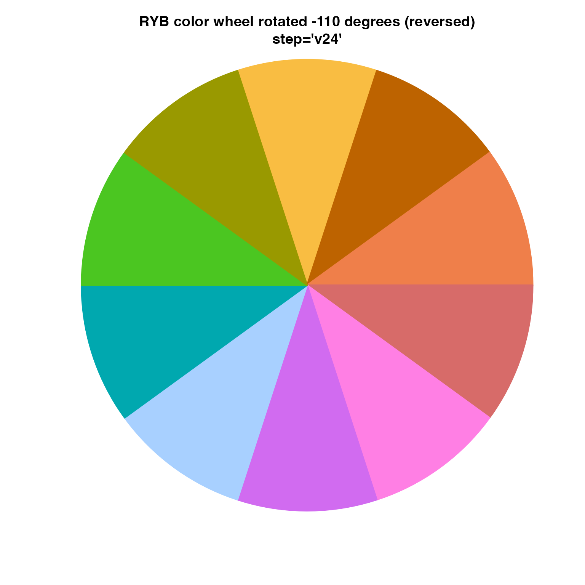
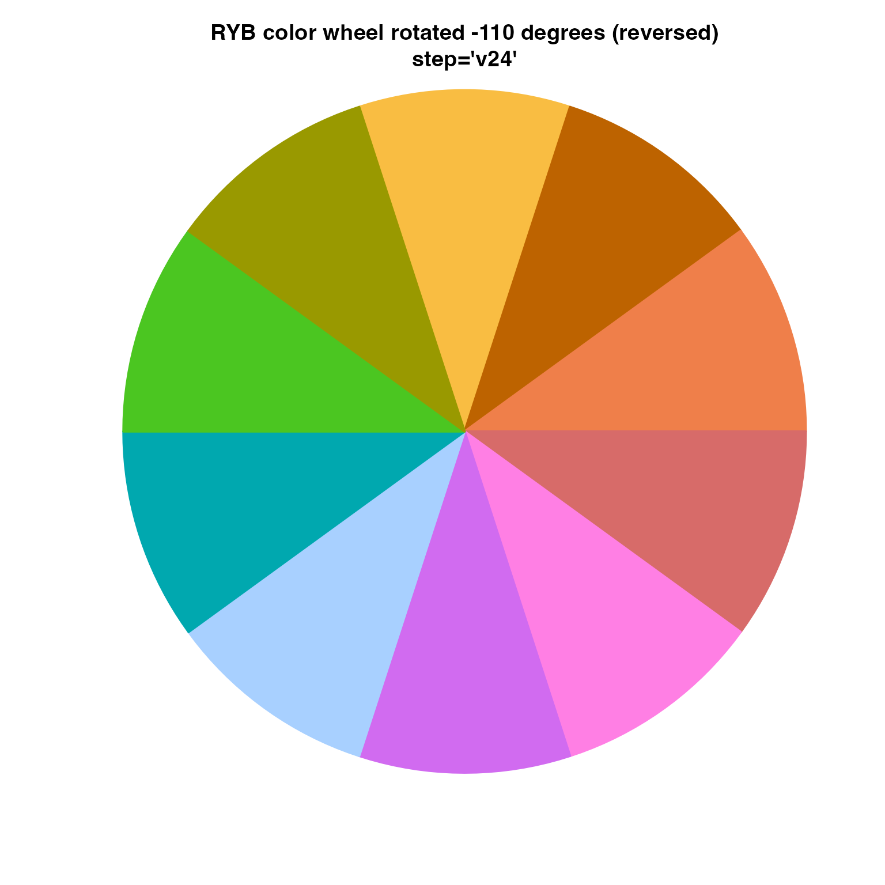

Adjust the color hue warp effect, experimental
Usage
adjust_hue_warp(
h1 = NULL,
h2 = NULL,
direction = NULL,
preset = getOption("colorjam.preset", "custom"),
h1_shift = 0,
h2_shift = 0,
reverse_h2 = FALSE,
...
)Arguments
- h1, h2
numericorNULL- preset
characterstring used to defineh1andh2when those values are not defined specifically.- h1_shift
numericangle in degrees to shift theh1hue. It is recommended to shifth2and noth1.- h2_shift
numericangle in degrees to shift theh2hue. It is recommended to shifth2and noth1.- reverse_h2
logicalindicating whether to reverse the order of values inh2.- ...
additional arguments are ignored.
Details
This function is currently being tested as an approach to adjust the position and order of the warp color hues. For example, the initial use case is to "rotate" the color wheel so the starting color is not always red. Also, the color wheel can be reversed so the color sequence is reversed.
See also
Other colorjam hue warp:
add_colorjam_preset(),
add_colorjam_step(),
approx_degrees(),
colorjam_presets(),
colorjam_steps(),
display_degrees(),
h2hw(),
h2hwOptions(),
hcl_to_hsl_hue(),
hsl_to_hcl_hue(),
hw2h(),
mean_angle(),
plot_colorjam_preset(),
remap_colorjam_preset(),
validate_colorjam_preset()
Examples
new_h1h2 <- adjust_hue_warp(preset="dichromat", h2_shift=0, reverse_h2=FALSE)
add_colorjam_preset("temp", h1=new_h1h2$h1, h2=new_h1h2$h2)
#> ℹ added preset 'temp'.
rj_0 <- rainbowJam(n=24, preset="temp", step="v23")
color_pie(rj_0, radius=1,
main="dichromat color wheel\nstep='v23'")
 rj_0 <- rainbowJam(n=24, preset="temp", step="v23", phase=c(1,2,4,3,6,5))
color_pie(rj_0, radius=1,
main="dichromat color wheel\nstep='v23'\ncustom phase")
n <- 24;
new_h1h2 <- adjust_hue_warp(preset="dichromat", h2_shift=-120, reverse_h2=FALSE)
add_colorjam_preset("temp", h1=new_h1h2$h1, h2=new_h1h2$h2, direction=1)
#> ℹ added preset 'temp'.
rj_120 <- rainbowJam(n=n, preset="temp", step="v23",
nameStyle="n")
color_pie(rj_120, radius=1,
main="dichromat color wheel rotated -120 degrees\nstep='v23'")
rj_0 <- rainbowJam(n=24, preset="temp", step="v23", phase=c(1,2,4,3,6,5))
color_pie(rj_0, radius=1,
main="dichromat color wheel\nstep='v23'\ncustom phase")
n <- 24;
new_h1h2 <- adjust_hue_warp(preset="dichromat", h2_shift=-120, reverse_h2=FALSE)
add_colorjam_preset("temp", h1=new_h1h2$h1, h2=new_h1h2$h2, direction=1)
#> ℹ added preset 'temp'.
rj_120 <- rainbowJam(n=n, preset="temp", step="v23",
nameStyle="n")
color_pie(rj_120, radius=1,
main="dichromat color wheel rotated -120 degrees\nstep='v23'")
 new_h1h2 <- adjust_hue_warp(preset="dichromat", h2_shift=0, reverse_h2=TRUE)
add_colorjam_preset("temp", h1=new_h1h2$h1, h2=new_h1h2$h2,
direction=new_h1h2$direction)
#> ℹ added preset 'temp'.
rj_0rev <- rainbowJam(n=n, preset="temp", step="v23")
names(rj_0rev) <- seq_len(n)
color_pie(rj_0rev, radius=1, main="dichromat color wheel (reversed)")
new_h1h2 <- adjust_hue_warp(preset="dichromat", h2_shift=0, reverse_h2=TRUE)
add_colorjam_preset("temp", h1=new_h1h2$h1, h2=new_h1h2$h2,
direction=new_h1h2$direction)
#> ℹ added preset 'temp'.
rj_0rev <- rainbowJam(n=n, preset="temp", step="v23")
names(rj_0rev) <- seq_len(n)
color_pie(rj_0rev, radius=1, main="dichromat color wheel (reversed)")
 new_h1h2 <- adjust_hue_warp(preset="dichromat", h2_shift=90, reverse_h2=FALSE)
add_colorjam_preset("temp", h1=new_h1h2$h1, h2=new_h1h2$h2,
direction=new_h1h2$direction)
#> ℹ added preset 'temp'.
rj_90 <- rainbowJam(n=n, preset="temp", step='v23')
color_pie(rj_90, radius=1,
main="color wheel rotated 90 degrees\nstep='v23'")
# RGB rotated to start at yellow, then red, then blue
new_h1h2 <- adjust_hue_warp(preset="rgb", h2_shift=-70, reverse_h2=TRUE)
add_colorjam_preset("temp", h1=new_h1h2$h1, h2=new_h1h2$h2,
direction=new_h1h2$direction)
#> ℹ added preset 'temp'.
n <- 10
rgb_rev <- rainbowJam(n=n,
preset="temp", step='v24')
color_pie(rgb_rev,
main="RGB color wheel rotated -30 degrees (reversed)\nstep='v24'")
new_h1h2 <- adjust_hue_warp(preset="dichromat", h2_shift=90, reverse_h2=FALSE)
add_colorjam_preset("temp", h1=new_h1h2$h1, h2=new_h1h2$h2,
direction=new_h1h2$direction)
#> ℹ added preset 'temp'.
rj_90 <- rainbowJam(n=n, preset="temp", step='v23')
color_pie(rj_90, radius=1,
main="color wheel rotated 90 degrees\nstep='v23'")
# RGB rotated to start at yellow, then red, then blue
new_h1h2 <- adjust_hue_warp(preset="rgb", h2_shift=-70, reverse_h2=TRUE)
add_colorjam_preset("temp", h1=new_h1h2$h1, h2=new_h1h2$h2,
direction=new_h1h2$direction)
#> ℹ added preset 'temp'.
n <- 10
rgb_rev <- rainbowJam(n=n,
preset="temp", step='v24')
color_pie(rgb_rev,
main="RGB color wheel rotated -30 degrees (reversed)\nstep='v24'")
 # same as above except using ryb3
ryb_h1h2 <- adjust_hue_warp(preset="ryb", h2_shift=-110, reverse_h2=TRUE)
add_colorjam_preset("temp", h1=ryb_h1h2$h1, h2=ryb_h1h2$h2,
direction=new_h1h2$direction)
#> ℹ added preset 'temp'.
n <- 10
ryb_rev <- rainbowJam(n=n,
#phase=c(1,4,5,2,6,3),
preset="temp", step='v24')
color_pie(ryb_rev,
main="RYB color wheel rotated -110 degrees (reversed)\nstep='v24'")

# remove "temp" preset
add_colorjam_preset(preset="temp", h1=NULL)
#> Warning: object 'preset' not found
#> ℹ removed preset 'temp'.
# same as above except using ryb3
ryb_h1h2 <- adjust_hue_warp(preset="ryb", h2_shift=-110, reverse_h2=TRUE)
add_colorjam_preset("temp", h1=ryb_h1h2$h1, h2=ryb_h1h2$h2,
direction=new_h1h2$direction)
#> ℹ added preset 'temp'.
n <- 10
ryb_rev <- rainbowJam(n=n,
#phase=c(1,4,5,2,6,3),
preset="temp", step='v24')
color_pie(ryb_rev,
main="RYB color wheel rotated -110 degrees (reversed)\nstep='v24'")

# remove "temp" preset
add_colorjam_preset(preset="temp", h1=NULL)
#> Warning: object 'preset' not found
#> ℹ removed preset 'temp'.